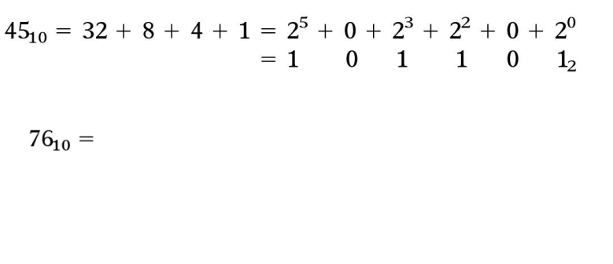
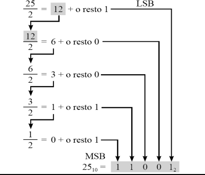

Manutenção de Computadores é uma disciplina da Proposta Pedagógica Curricular (PPC) do Curso Técnico Integrado do IFMG Campus Sabará, ministrada atualmente pelo professor Renato Miranda Filho, a disciplina de Manutenção de Computadores tem
como ementa:
Revisão de eletricidade: multímetro, tomadas e fontes de energia
Manutenção corretiva e preventiva
Instalação de sistemas operacionais
Formatação de HDs
No dia 18 de maio, a turma do 2°ano do Curso Técnico de Informática Integrado ao Ensino Médio teve sua primeira ministração de aula da disciplina, lecionada pelo professor Renato que possui graduação em Engenharia de Computação pelo Centro Federal
de Educação Tecnológica de Minas Gerais (2011), mestrado em Ciência da Computação pela Universidade Federal de Minas Gerais (2014) e atualmente é aluno de doutorado do Programa de Pós-graduação em Ciência da Computação na Universidade Federal
de Minas Gerais (2017).
Ainda na primeira aula aprendemos sobre o Sistema Binário e como realizar sua conversão, tendo em vista sua importância para a Computação já que toda informação recebida e processada pelos computadores ocorre através deste Sistema.
SISTEMA DE NUMERAÇÃO BINÁRIO
Mais importante em sistemas digitais
Decimal: importante por ser universalmente usado para representar quantidades fora do sistema digital
Conversão necessária
CONVERSÃO BINÁRIA PARA DECIMAL
Converter binário em decimal através da soma das posições que contêm um 1:
CONVERSÃO DECIMAL PARA BINÁRIA
Trata-se de um processo inverso ao descrito anteriormente, aqui todas as posições devem ser contabilizadas

ALTERNATIVA: DIVISÃO REPETIDA
Divida o número decimal por 2.
O primeiro restante é o LSB (menos significativo). O último é o MSB.

CÓDIGOS ALFANUMÉRICOS
O código alfanumérico representa todos os caracteres e as funções encontrados em um teclado de computador:
26 letras minúsculas e 26 maiúsculas, 10 dígitos, 7 sinais de pontuação, de 20 a 40 outros caracteres.
O código alfanumérico mais utilizado é o ASCII
ASCII = American Standard Code for Information Interchange (Código Padrão Americano para Intercâmbio de Informações).